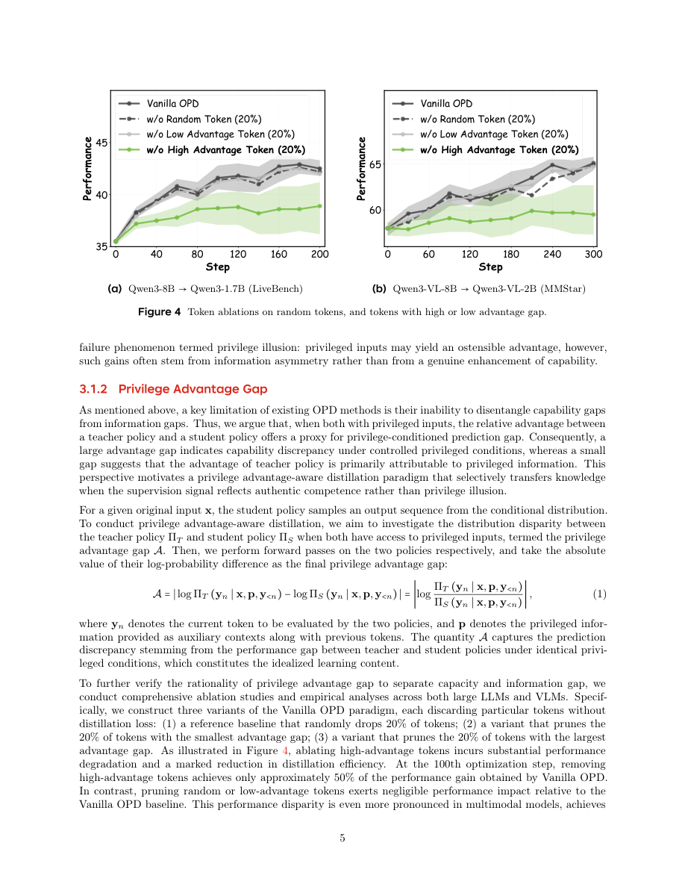

#1
★ 7/10
DOPD: Dual On-policy Distillation
DOPD：双重在线策略蒸馏

图 Figure · Page 5 of paper
🎯 用"双老师"智能路由让小模型更聪明地向大模型学习
A smarter student-teacher distillation method that dynamically routes learning signals to avoid misleading supervision.
🗣️ 一句话比喻 · Plain-English Analogy就像一个学霸在给普通同学辅导时，聪明的辅导老师会区分哪些题目是"你能学会的解题技巧"，哪些是"因为你有参考书而我没有才做对的"——对前者重点讲解，对后者则换一种方式补充。DOPD就是那个会区分两类题目的聪明辅导老师。Imagine a star student tutoring a classmate — a smart tutor knows the difference between "skills you can actually learn" and "answers I got right only because I had the answer key you don't." DOPD is that smart tutor: it figures out, word by word, whether the AI student is learning real skills or just chasing an unfair advantage it can never have.
| 维度 | 中文 | English |
|---|---|---|
| ❓ 待解决 的问题 |
训练小型AI模型时，我们通常让它向大型AI模型"学习"，这叫知识蒸馏。但当大模型或小模型拥有对方没有的"特权信息"（比如额外的图片或提示）时，小模型会被误导——它可能以为自己在学习大模型的"能力"，其实只是在模仿它拥有的"额外信息优势"，这种差距永远无法真正弥补。更麻烦的是，并不是每个词（token）都同等重要，大多数词对真正的能力提升贡献很小。 | When training a small AI model to mimic a large one (called knowledge distillation), things get tricky if either model has extra information the other doesn't — like one having access to a picture while the other doesn't. The small model can accidentally "learn" to copy the big model's information advantage rather than its actual reasoning skills, a gap it can never truly close. On top of that, not all words in a generated response are equally important for learning real skills. |
| 💡 解决 的亮点 |
• 发现并命名了"特权幻觉"现象：小模型在蒸馏时会把"信息不对称"误当成"能力差距"去学习，导致学习方向跑偏。 • 提出双重蒸馏框架：根据每个词（token）的重要性，动态决定这个词该向"特权大模型"学，还是向"特权小模型"自身"学"。 • 为每个词设计了不同强度、目标和策略的监督信号，做到有的放矢，避免被无用信号干扰。 | • Identifies and names a new failure mode called "privilege illusion" — where the student model learns the wrong thing by confusing information gaps with capability gaps. • Proposes a dual distillation framework that dynamically assigns each word-token to either the privileged teacher or the privileged student as its learning source. • Designs customized supervision (different strength, objective, and strategy) per token, ensuring only credible and useful signals drive learning. |
| 🧪 实验 内容 |
实验在两大类模型上进行：大语言模型（LLM）和视觉语言模型（VLM）。评估涵盖标准蒸馏基准、分布外（OOD）任务、持续学习场景和鲁棒性测试。与普通在线策略蒸馏（Vanilla OPD）及多种同类方法进行对比。还额外测试了方法在不同训练设置下的稳定性。 | Experiments were run on both large language models (LLMs) and vision-language models (VLMs). The method was compared against vanilla on-policy distillation and several other distillation baselines. Evaluation covered standard benchmarks, out-of-distribution (OOD) tasks, continual learning scenarios, and robustness tests. Stability across different training configurations was also assessed. |
| 📊 实验 结果 |
DOPD在LLM和VLM设置下均持续优于普通在线策略蒸馏（Vanilla OPD）及所有对比方法。在分布外任务上也展示出显著优势，验证了方法的泛化能力。持续学习和鲁棒性实验进一步证实其稳定性。（注：论文摘要中未披露具体数字，以上为方向性结论；具体数值需参阅论文正文表格。） | DOPD consistently outperforms Vanilla OPD and all compared baselines across both LLM and VLM settings. It shows notable gains on out-of-distribution tasks, demonstrating stronger generalization. Continual learning and robustness experiments further confirm its stability advantages. (Note: The abstract does not state specific numeric improvements; precise figures are available in the paper's main result tables.) |
| 🏁 结论 | DOPD证明了在知识蒸馏中，精准识别每个词的监督来源（大模型还是小模型自身）比盲目跟随大模型更有效。它为AI模型压缩领域提供了一种更可靠、更聪明的训练范式。 | DOPD proves that dynamically routing supervision per token — rather than blindly following the teacher — leads to more effective and reliable knowledge distillation. It sets a new, smarter paradigm for compressing large AI models into smaller, capable ones. |
| 🔗 论文 链接 |
arXiv: 2606.30626v1 · 📥 PDF | |
⚙️ Method · 方法详解
DOPD的核心思路是：不让小模型盲目跟着大模型学所有词，而是对每个词做一个"裁判"——通过比较大模型和小模型在这个词上的"优势分差"和"相对概率"，判断这个词的监督信号应该来自哪里。如果大模型在这个词上的优势明显且可信，就让小模型跟大模型学；如果优势来自于信息不对称（即"特权幻觉"），就让小模型参考自己的特权版本来学，只获取辅助信号而不被误导。这样每个词都得到最适合它的学习方式，既传递真实能力，又避免被虚假优势带偏。
DOPD acts like a smart referee for every single word the student model generates. For each word, it compares the "advantage scores" of the privileged teacher and the privileged student — essentially asking: "Is the teacher better here because of real skill, or just because it has extra info?" If the teacher's advantage is genuine and trustworthy, the student learns from the teacher. If the advantage smells like it comes from information the student can never have, the student instead learns from its own "privileged self" — gaining auxiliary signals without being misled. Every word gets a tailored teaching strategy: different intensity, different goal, and different approach.
📐 Key Formulas · 关键公式
\[\text{Route}(t) = \begin{cases} \text{Teacher supervision} & \text{if } A_{\text{teacher}}(t) - A_{\text{student}}(t) > \delta \\ \text{Student self-supervision} & \text{otherwise} \end{cases}\]
💡 对每个词（token）t，比较特权大模型和特权小模型的优势分差，若大模型优势明显（超过阈值δ），则用大模型监督；否则用小模型自身的特权版本提供辅助监督。
For each token t, compare the advantage gap between the privileged teacher and privileged student. If the teacher's advantage exceeds a threshold δ, learn from the teacher; otherwise, use the student's own privileged version for auxiliary supervision.
🌟 Why It Matters · 为什么重要
在现实世界中，我们需要把大型AI模型"压缩"成小模型，才能部署到手机或低算力设备上。DOPD让这种压缩更聪明、更准确，意味着未来手机上的AI助手可以更接近云端大模型的能力。
Compressing large AI models into smaller ones is key to running AI on phones and everyday devices. DOPD makes this compression smarter and more accurate, meaning the AI in your pocket could soon be much closer in quality to the powerful cloud-based version.